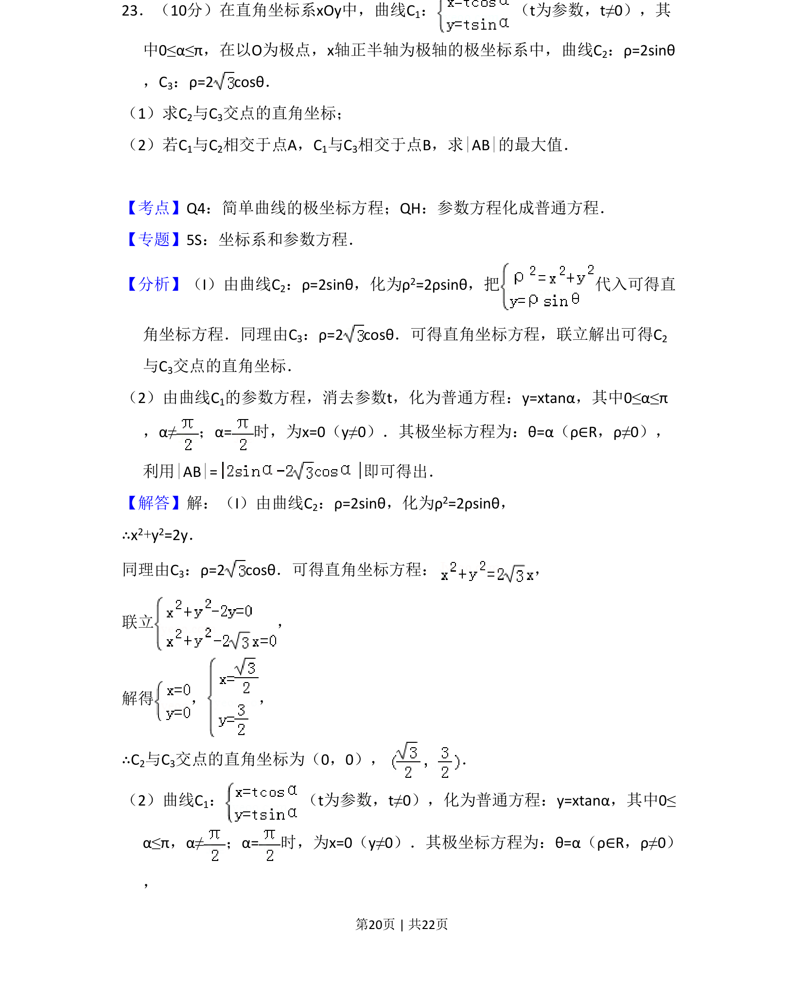
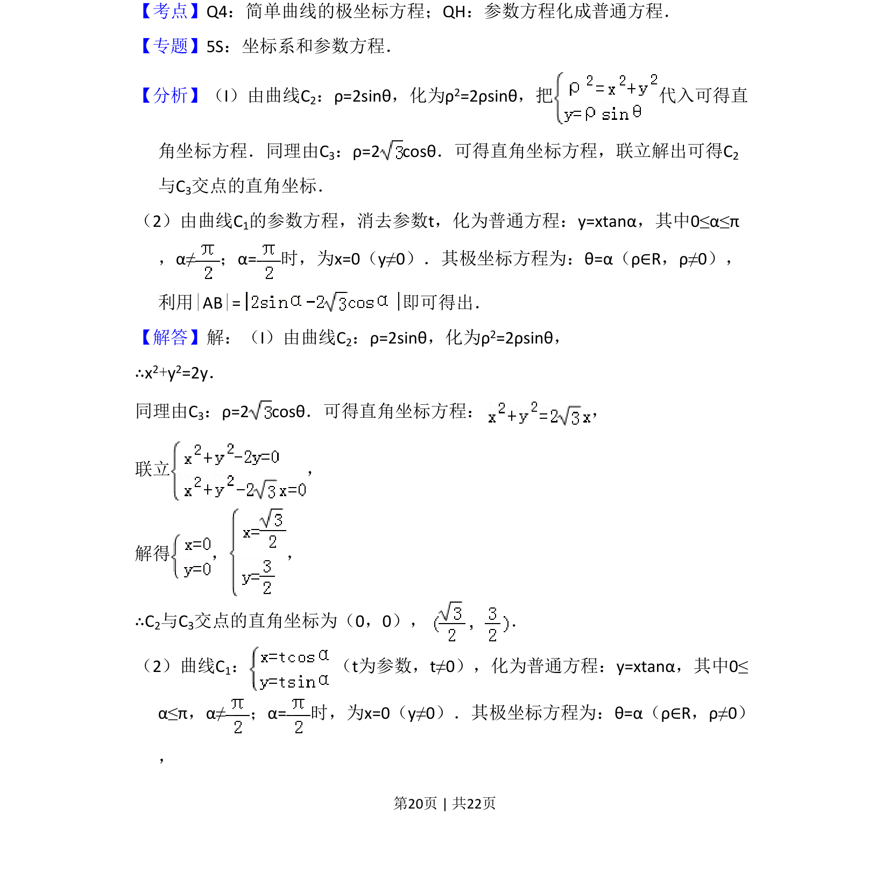
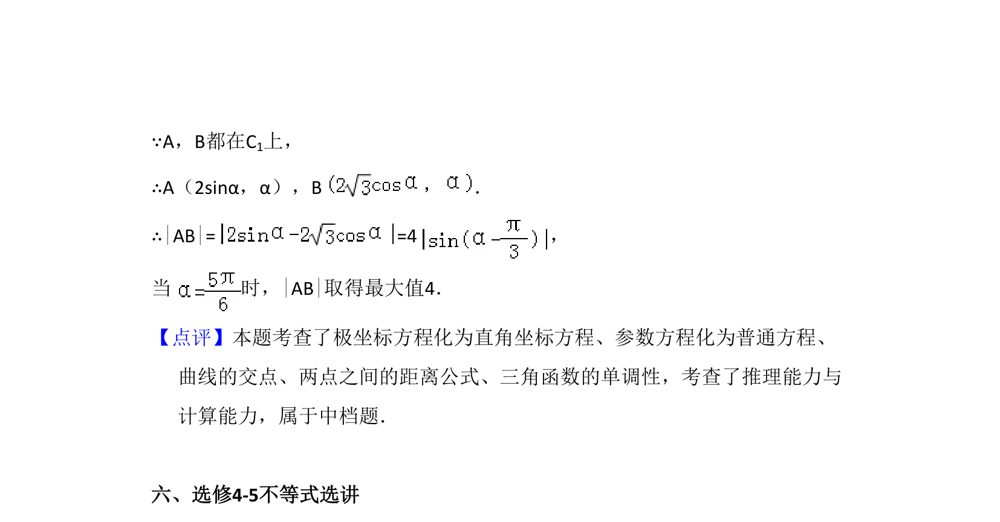

考点：极坐标方程化直角坐标方程 参数方程化普通方程 两点间距离公式

本题主要考查极坐标方程与直角坐标方程的互化、参数方程与普通方程的转化，以及利用极坐标求曲线交点与距离最大值。


📄 原 PDF 第 20 页：
素材/真题/吉林/2008-2024·（吉林）数学高考真题/2015年高考数学试卷（文）（新课标Ⅱ）（解析卷）.pdf
23．（10分）在直角坐标系xOy中，曲线C1： （t为参数，t≠0），其 中0≤α≤π，在以O为极点，x轴正半轴为极轴的极坐标系中，曲线C2：ρ=2sinθ ，C3：ρ=2 cosθ． （1）求C2与C3交点的直角坐标； （2）若C1与C2相交于点A，C1与C3相交于点B，求|AB|的最大值．
【考点】Q4：简单曲线的极坐标方程；QH：参数方程化成普通方程．菁优网版权所有 【专题】5S：坐标系和参数方程． 【分析】（I）由曲线C2：ρ=2sinθ，化为ρ2=2ρsinθ，把 代入可得直 角坐标方程．同理由C3：ρ=2 cosθ．可得直角坐标方程，联立解出可得C 2 与C3交点的直角坐标． （2）由曲线C1的参数方程，消去参数t，化为普通方程：y=xtanα，其中0≤α≤π ，α≠；α=时，为x=0（y≠0）．其极坐标方程为：θ=α（ρ∈R，ρ≠0）， 利用|AB|=即可得出． 【解答】解：（I）由曲线C2：ρ=2sinθ，化为ρ2=2ρsinθ， ∴x2+y2=2y． 同理由C3：ρ=2 cosθ．可得直角坐标方程： ， 联立 ， 解得 ， ， ∴C2与C3交点的直角坐标为（0，0）， ． （2）曲线C1： （t为参数，t≠0），化为普通方程：y=xtanα，其中0≤ α≤π，α≠；α=时，为x=0（y≠0）．其极坐标方程为：θ=α（ρ∈R，ρ≠0） ，